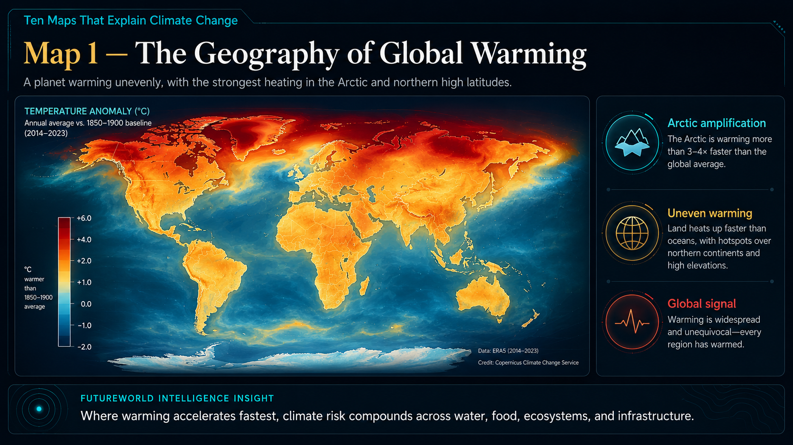
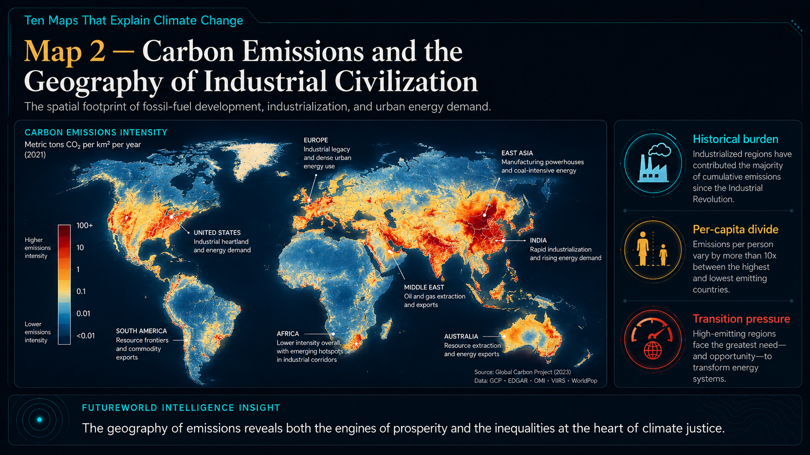
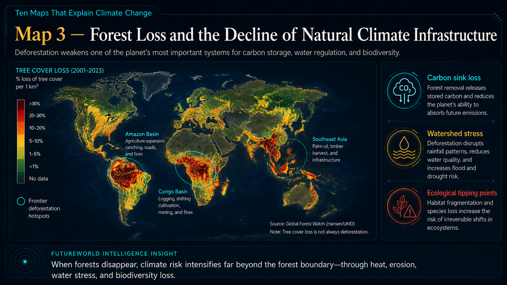
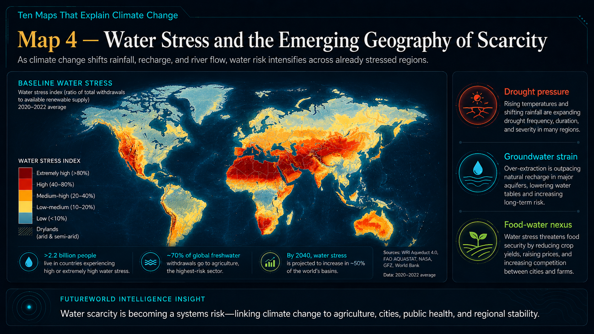
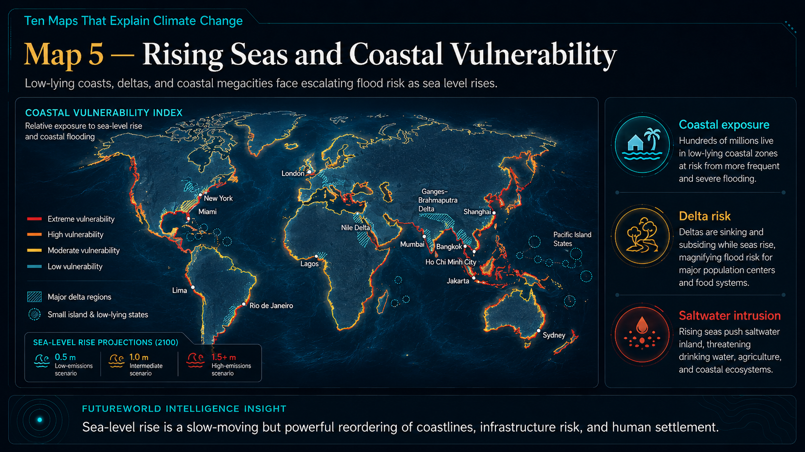
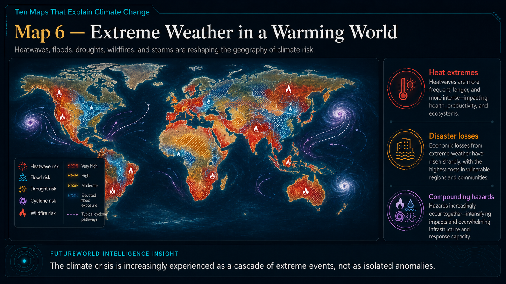
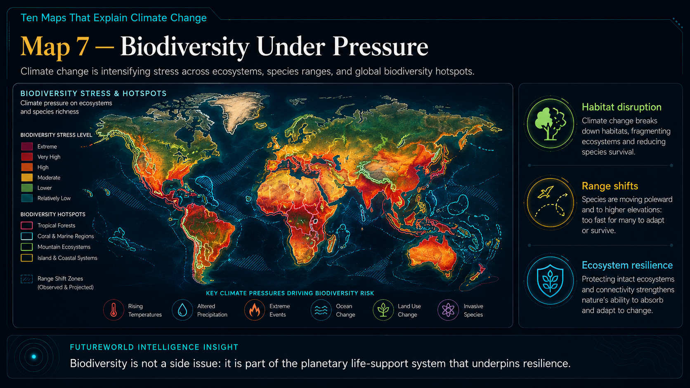
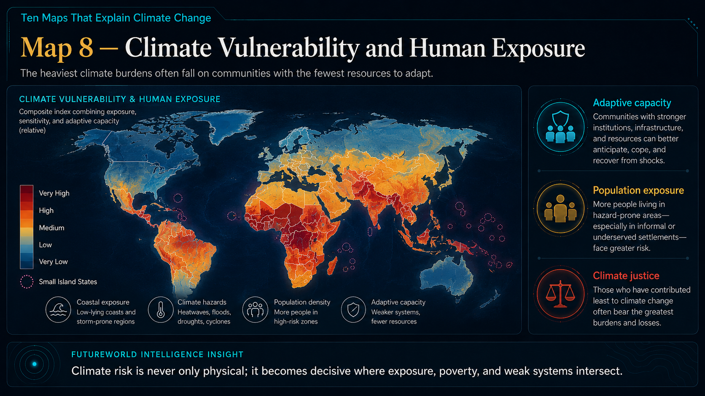
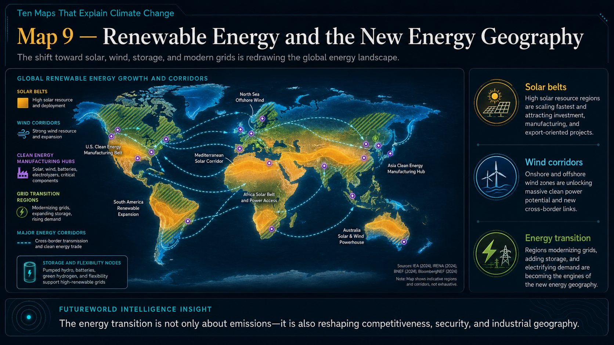
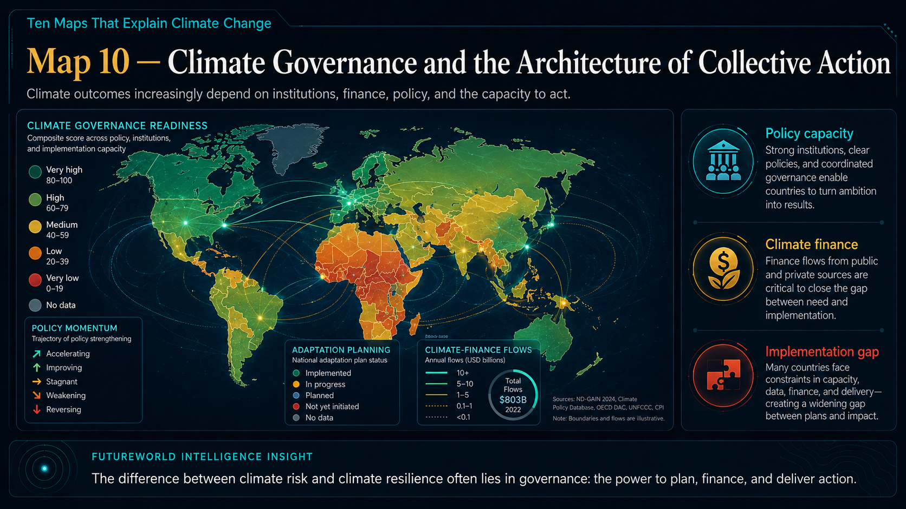

Climate Intelligence Report
A visual intelligence report on the planetary transformations reshaping warming, emissions, forests, water, coastlines, disasters, biodiversity, vulnerability, energy and governance.
Climate change is usually explained through numbers: 1.5°C, 2°C, atmospheric carbon concentrations, gigatons of emissions or millions of hectares of forest loss. Maps translate those numbers into geography. They show where warming is accelerating, where natural systems are weakening, where water stress is intensifying, and where communities are least prepared to adapt.
The world is warming, but it is not warming evenly.

Global warming is often presented as a single planetary average, but the lived reality of climate change is regional. Land warms faster than oceans, high northern latitudes warm faster than the global mean, and mountain systems respond strongly to changing snow, ice and atmospheric conditions.
The Arctic is a central example of climate amplification. As reflective snow and ice decline, darker surfaces absorb more solar radiation, reinforcing warming. This affects not only polar ecosystems but also atmospheric circulation, ocean systems, weather patterns and risk exposure far beyond the Arctic.
For planning purposes, this map teaches an essential lesson: climate risk is geographical. Adaptation strategies must be designed according to local exposure, ecosystem type, water dependence, land use and institutional capacity.
Emissions reveal the spatial footprint of fossil-fuel development, industrial production and urban energy demand.

The geography of emissions reflects the history of industrialization. Major emission clusters are associated with manufacturing regions, fossil-fuel infrastructure, electricity generation, transport corridors, urban concentration and energy-intensive production systems.
Yet climate responsibility is not only about current emissions. Historical emissions, per-capita emissions and development needs differ sharply between countries. Many communities facing the highest climate impacts contributed relatively little to the cumulative greenhouse-gas burden.
This creates a climate-justice challenge: how can the world reduce emissions rapidly while allowing developing regions to improve energy access, livelihoods and resilience?
Forests are natural climate infrastructure: they store carbon, regulate water and support biodiversity.

Forests are not passive landscapes. They regulate hydrology, protect soils, influence local climate, sustain biodiversity and absorb carbon. When forests are removed or degraded, climate risk expands beyond the forest boundary.
In tropical forests, deforestation often follows agriculture expansion, commodity production, road construction, mining and fire. In mountain watersheds, forest degradation can intensify erosion, flash flooding, slope instability and water insecurity.
For Pakistan and Khyber Pakhtunkhwa, this is directly relevant. Restoration approaches such as assisted natural regeneration, watershed rehabilitation, community forestry and protection of indigenous vegetation can contribute to climate adaptation while strengthening local ecosystems.
Climate change alters rainfall, recharge, glaciers, river flows and groundwater stress.

Water stress is becoming one of the defining climate-security challenges of the century. Higher temperatures increase evaporation, changing precipitation patterns alter recharge, and glacier-fed systems face long-term uncertainty.
Water scarcity connects climate change with agriculture, urban development, public health, ecosystem stability and regional security. Areas already dependent on stressed aquifers or uncertain rainfall face rising competition between farms, cities, industry and ecosystems.
In mountain and dryland regions, watershed restoration, groundwater recharge, rainwater harvesting and climate-smart agriculture become central adaptation priorities.
Sea-level rise is a slow-moving transformation of coastal geography.

Sea-level rise does not need to be dramatic to become dangerous. Even gradual sea-level rise increases the reach of storm surges, accelerates erosion, worsens tidal flooding and pushes saltwater into freshwater and agricultural systems.
Low-lying deltas and coastal megacities are especially exposed. Many contain dense populations, ports, transport corridors, energy infrastructure and food-production systems. Sea-level rise therefore becomes an infrastructure, urban-planning and food-security issue.
Adaptation will require coastal zoning, early warning systems, ecosystem-based buffers, resilient infrastructure and long-term settlement planning.
Climate change is increasingly experienced as a cascade of extreme events.

Climate change does not create every weather event, but it changes the background conditions in which weather unfolds. A warmer atmosphere can hold more moisture, increasing the potential intensity of heavy rainfall. Higher temperatures increase heat stress, dry vegetation and worsen wildfire risk.
Extreme weather increasingly appears as compound risk: heat and drought, floods and disease, storms and infrastructure failure, fires and air pollution. This requires governments and communities to think beyond single-hazard response systems.
Climate resilience depends on early warnings, disaster preparedness, land-use planning, resilient infrastructure and ecosystem restoration.
Climate change is intensifying stress across ecosystems and species ranges.

Biodiversity is part of the planet’s life-support system. It supports food systems, pollination, water regulation, pest control, medicine, soil formation and ecosystem resilience.
Climate change shifts species ranges, disrupts migration patterns, alters breeding cycles and increases stress on ecosystems already affected by land-use change, pollution and invasive species. Coral reefs, tropical forests, mountain ecosystems and island systems are among the most sensitive.
Protecting biodiversity is therefore not separate from climate adaptation. It is a foundation for resilience.
The heaviest climate burdens often fall on communities with the fewest resources to adapt.

Climate vulnerability is not only physical exposure. It is shaped by poverty, infrastructure, access to services, governance capacity, social exclusion and livelihood dependence on climate-sensitive resources.
The IPCC emphasizes that vulnerable communities who have historically contributed the least to climate change are often disproportionately affected. This is the core ethical and policy problem of climate justice.
For rural and mountain communities, resilience requires local institutions, livelihood diversification, awareness, ecological restoration, early warning systems and inclusive planning.
The shift toward solar, wind, storage and modern grids is redrawing the global energy landscape.

Climate action is reshaping energy geography. Solar belts, wind corridors, grid modernization, battery storage and green-hydrogen systems are creating new centers of investment, manufacturing and geopolitical relevance.
The International Energy Agency notes that renewable capacity is expanding rapidly, while the global target to triple renewable capacity by 2030 remains central to the transition agenda. Yet deployment is uneven and depends on finance, policy, grid readiness and supply chains.
For developing regions, the energy transition is both a climate necessity and a development opportunity.
Climate outcomes increasingly depend on institutions, finance, policy and the capacity to act.

Climate governance determines whether knowledge becomes action. A country may understand climate risk but still fail to adapt if institutions are weak, finance is unavailable, planning is fragmented or implementation capacity is limited.
The implementation gap is one of the most serious climate risks. Ambitious plans must be translated into enforceable policies, resilient infrastructure, local adaptation systems, restoration programs and measurable progress.
Climate governance is not only international diplomacy. It includes provincial planning, local institutions, data systems, community mobilization and field-level monitoring.
The first ten maps show the crisis. FutureWorld Intelligence adds an eleventh map: the map of solutions. It is not a single dataset, but a strategic framework for locating where restoration, adaptation, monitoring and governance can reduce risk.
Assisted natural regeneration, watershed rehabilitation, forest protection and biodiversity corridors.
Recharge zones, rainwater harvesting, soil conservation, spring protection and climate-smart irrigation.
Village institutions, awareness, livelihood diversification, early warning and participatory monitoring.
GIS mapping, satellite monitoring, dashboards, risk indicators and evidence-based planning.
Distributed renewables, efficient grids, storage and equitable energy access.
Finance delivery, policy coherence, transparent reporting and measurable implementation.
Pakistan sits at the intersection of glacier dynamics, monsoon variability, water stress, flood exposure, heat risk and rural livelihood vulnerability. Climate resilience must therefore combine national planning with provincial and community-level action.
For Bajaur and similar mountain landscapes, climate adaptation is closely linked with degraded watershed restoration, community protection, indigenous vegetation recovery, fire awareness, grazing management and local institutions.